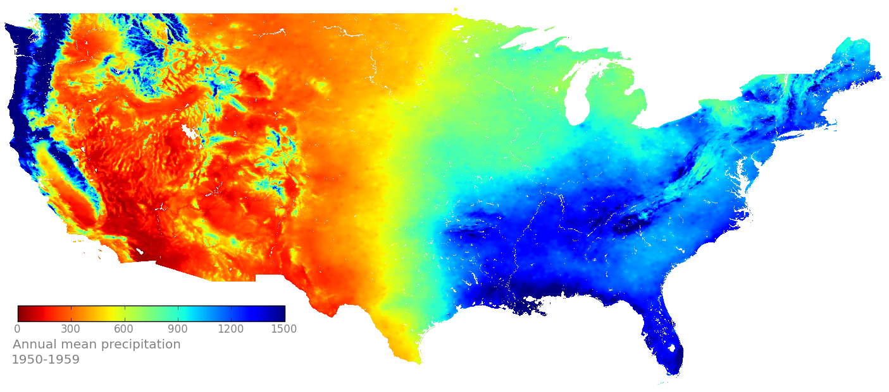
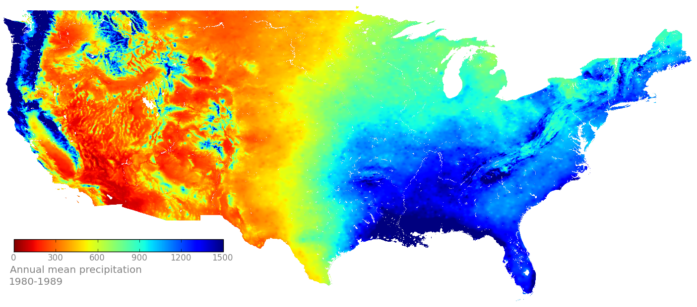
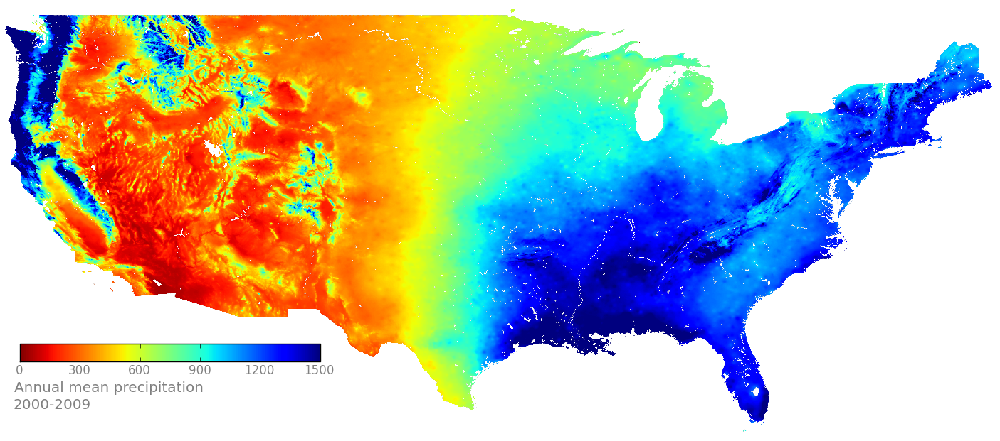
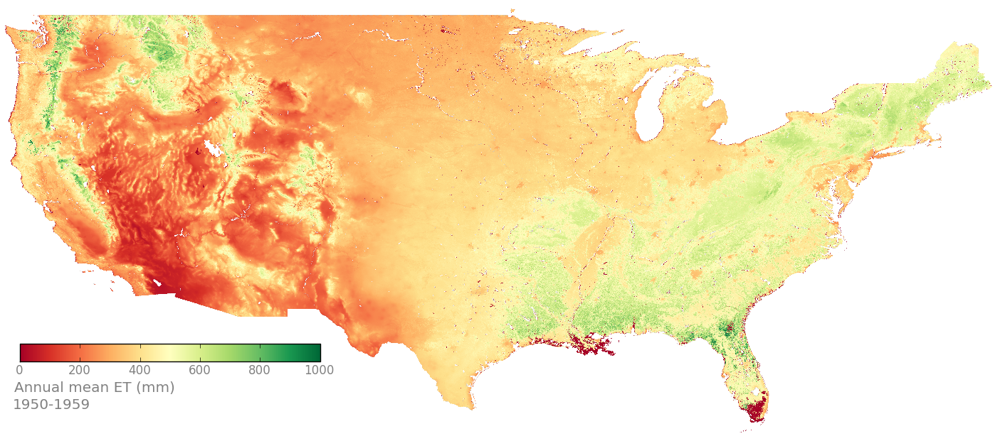
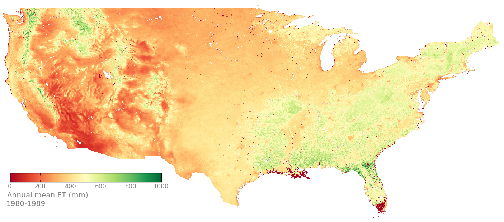
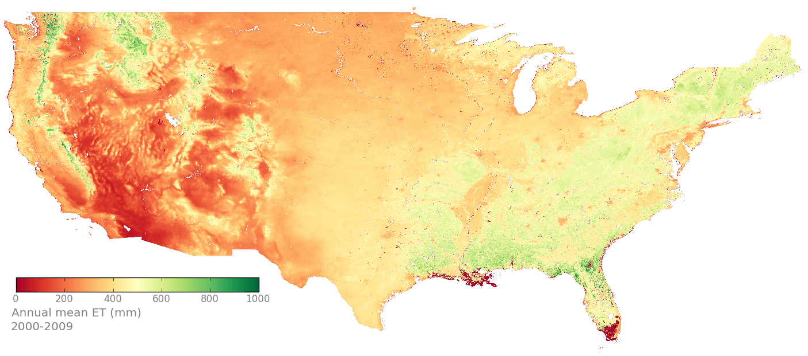
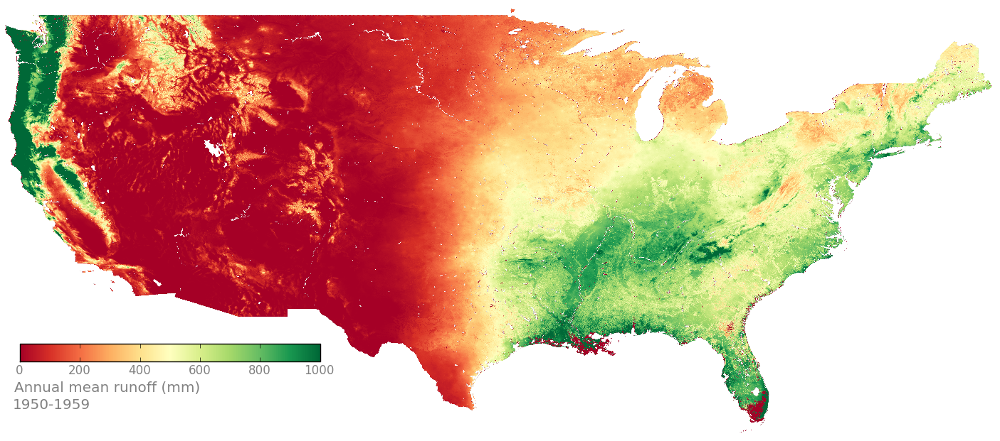
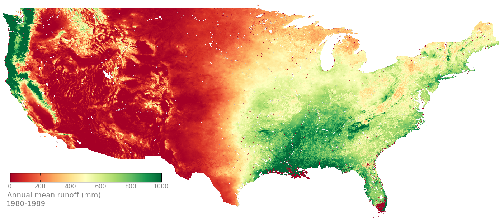
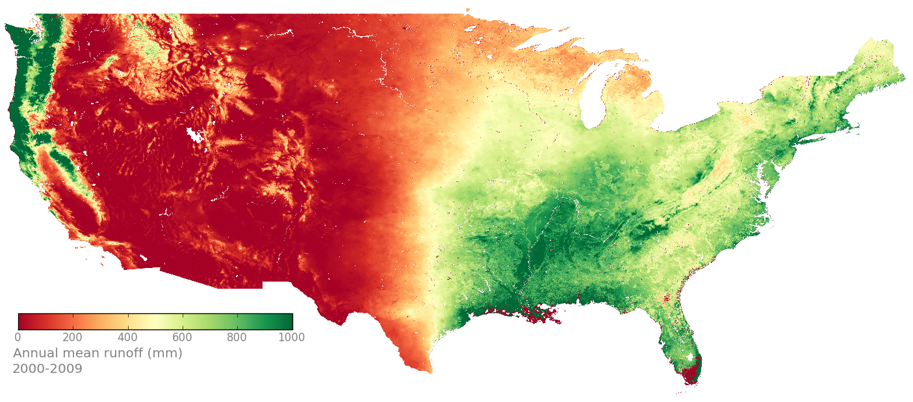

Maps of TOPS model output¶
Annual mean of precipitation¶
 fig. Annual mean of precipitation from 1950-1959
 fig. Annual mean of precipitation from 1980-1989
 fig. Annual mean of precipitation from 2000-2009
Annual mean of ET¶
 fig. Annual mean of evapotranspriation from 1950-1959
 fig. Annual mean of evapotranspriation from 1980-1989
 fig. Annual mean of evapotranspriation from 2000-2009
Annual mean of ET / prcp¶
 fig. Annual mean of ET/P from 1950-1959
fig. Annual mean of ET/P from 1950-1959
 fig. Annual mean of ET/P from 1980-1989
fig. Annual mean of ET/P from 1980-1989
 fig. Annual mean of ET/P from 2000-2009
fig. Annual mean of ET/P from 2000-2009
Annual mean of runoff¶
 fig. Annual mean of runoff from 1950-1959
 fig. Annual mean of runoff from 1980-1989
 fig. Annual mean of runoff from 2000-2009
Annual mean of runoff/P¶
 fig. Annual mean of runoff/P from 1950-1959
fig. Annual mean of runoff/P from 1950-1959
 fig. Annual mean of runoff/P from 1980-1989
fig. Annual mean of runoff/P from 1980-1989
 fig. Annual mean of runoff/P from 2000-2009
fig. Annual mean of runoff/P from 2000-2009
 fig. Max SWE from 1950-1959
fig. Max SWE from 1950-1959 fig. Max SWE from 1980-1989
fig. Max SWE from 1980-1989 fig. Max SWE from 2000-2009
fig. Max SWE from 2000-2009 fig. Min SWE from 1950-1959
fig. Min SWE from 1950-1959 fig. Min SWE from 1980-1989
fig. Min SWE from 1980-1989 fig. Min SWE from 2000-2009
fig. Min SWE from 2000-2009delta SWE¶
 fig. Delta SWE from 1950-1959
fig. Delta SWE from 1950-1959
 fig. Delta SWE from 1980-1989
fig. Delta SWE from 1980-1989
 fig. Delta SWE from 2000-2009
fig. Delta SWE from 2000-2009
delta SWE/P¶
 fig. Delta SWE/P from 1950-1959
fig. Delta SWE/P from 1950-1959
 fig. Delta SWE/P from 1980-1989
fig. Delta SWE/P from 1980-1989
 fig. Delta SWE/P from 2000-2009
fig. Delta SWE/P from 2000-2009